办公 AI 讲座
完整课件与讲稿
31 页课件、逐页讲话稿、备课资料与相关链接。
第 1 页 · 开场
不管如何，马上把AI用起来
讲话稿
各位老师好，我们都是老朋友了。非常感谢刘校给我这次机会，能够像朋友一样，跟大家分享我最近使用AI的一些经历和感受。有不周到的地方，也欢迎各位老师指正。
今天的主题就是这句话：不管如何，马上把AI用起来。我们可能已经听过很多介绍，也见过很多很漂亮的成果。但只有把自己的真实工作交进去，亲自经历一遍提要求、看结果和改问题，才会知道它到底能帮自己做什么。这个任务可以很小，一份通知、一段会议记录，或者一张配图，都可以作为起点。
课件文字
不管如何，
马上把
AI
用起来
从一个真实任务出发，把 AI 变成可以反复使用的工作工具。
认识 AI
完成真实项目
走进日常办公
办公AI实践分享
办公 AI · 认识与实践
01 / 31
工具与资料
完整备课资料
第 2 页 · 开场
手机和录音笔，是 AI 的工作入口
讲话稿
今天我先从两个大家熟悉的东西讲起：手机和录音笔。它们都是AI工作的重要入口。我们不一定坐在电脑前，把一段话打得很完整才能开始。开会、讨论、临时想到一个观点，都可以先把声音留下来。
我自己的做法也是这样。比如准备这次讲座，我可以先把思路说出来，转成文字，再让AI帮助整理框架。这段话里哪些是我的观点，哪些是举例，哪里重复了，哪里还没有说清楚，都可以在文字里继续修改。
转写后仍然保留原音频，因为人名、数字和专业词可能听错。关键内容回到原话核对，再整理成可以交出去的成果。后面讲飞书妙记时，我会把音视频到文字这一步具体展开。
课件文字
手机和录音笔，是 AI 的工作入口
把说过的话保存下来，转成可以整理、搜索和复用的材料。
录音保留依据，文字方便整理，确认稿方便复用。
随时留下原话
手机、录音笔都可以。先保存声音，再处理内容。
让材料继续有用
转写后整理成纪要、待办、文稿；关键事实回听核对。
开场
办公 AI · 认识与实践
本页工具与资料 ↗
02 / 31
工具与资料
完整备课资料
第 3 页 · 开场
今天讲两件事
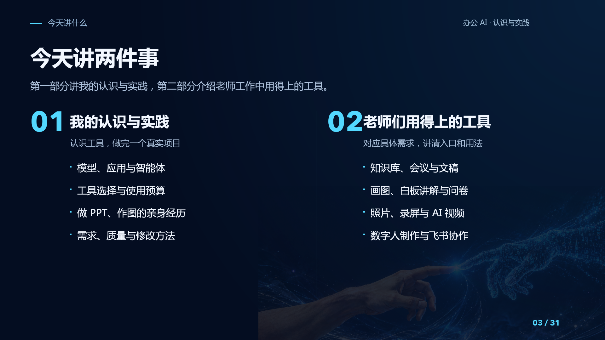
讲话稿
今天仍然分成两大部分。第一部分讲我的认识和实际经历：AI可以怎样使用，工具怎么选，为什么要投入，以及我用AI做PPT和作图的过程。
第二部分把重点放在老师们需要的功能上。每介绍一个工具，我都会讲清楚它解决什么事、从哪里打开、怎样开始用。包括知识库、会议整理、画图与录课、问卷、照片和视频，最后再讲数字人与飞书。大家根据自己的工作选用，不用一次把所有工具都学完。
课件文字
今天讲两件事
第一部分讲我的认识与实践，第二部分介绍老师工作中用得上的工具。
01
我的认识与实践
认识工具，做完一个真实项目
模型、应用与智能体
工具选择与使用预算
做 PPT、作图的亲身经历
需求、质量与修改方法
02
老师们用得上的工具
对应具体需求，讲清入口和用法
知识库、会议与文稿
画图、白板讲解与问卷
照片、录屏与 AI 视频
数字人制作与飞书协作
今天讲什么
办公 AI · 认识与实践
03 / 31
工具与资料
完整备课资料
第 4 页 · 认识与选择
AI 变化太快，经验要在使用中积累
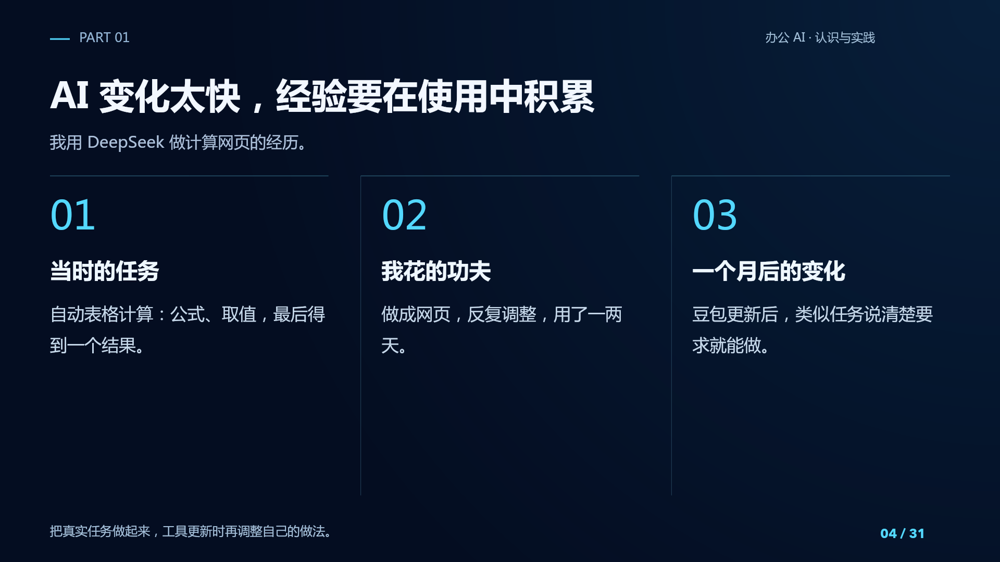
讲话稿
这一页我想重新讲讲使用AI的心态。我不是大模型研究者，也不是专门做测评的人，我首先是一个使用者。我最关心的，是它能不能把手上的工作做好。
知识进步太快，工具迭代也太快。我有时会说一句话：AI要赶紧学，不然就不用学了。我的意思是，如果一直停在看课和观望里，等你想全部搞明白的时候，工具可能已经换了一轮。我早期学过不少课程，现在回头看，其中一些做法已经过时了。
我举个自己的例子。之前我用DeepSeek做了一个网页，给一个朋友做了一套自动表格系统。它需要一系列公式计算、各种取值，最后算出一个数。人工操作一次，可能要五到十分钟，还需要不断调整。
朋友找到我，让我帮他做。他要得很着急，也不给我钱，我就做了。前后花了一两天，反复修改，按我当时的记忆用了几个亿的Token。做完交给他，他特别开心，还说这可以做成一门生意。
结果一个月以后，豆包更新了，类似的事情说句话就可以做了。这个变化给我的感受很直接：当时费了很大力气完成的东西，过一段时间门槛就降下来了。这个过程也没有白做，因为真正做过一次，我才知道需求是什么，结果应该怎样检查。
所以我想说，先把AI用起来。选一个真实任务，完整做一遍，经验会留在自己身上。以后工具更强了，我们再把新的能力接进来。
课件文字
AI 变化太快，经验要在使用中积累
我用 DeepSeek 做计算网页的经历。
01
当时的任务
自动表格计算：公式、取值，最后得到一个结果。
02
我花的功夫
做成网页，反复调整，用了一两天。
03
一个月后的变化
豆包更新后，类似任务说清楚要求就能做。
PART 01
办公 AI · 认识与实践
把真实任务做起来，工具更新时再调整自己的做法。
04 / 31
工具与资料
完整备课资料
第 5 页 · 认识与选择
模型与应用，分别是什么
讲话稿
先看这张示意图。左边是模型，可以理解为处理语言和信息的能力。LLM 是大语言模型的英文简称。模型结合训练中学到的规律和这次提供的材料来生成回答，它说得流畅，也仍然可能把事实说错。
右边是我们真正打开的应用，比如豆包、千问、Kimi、ChatGPT。它们把模型能力放进手机、网页或者桌面软件，提供聊天、上传文档、搜索和保存文件等操作。图里的设备只是功能示意，不是某个产品的真实界面，也不表示这些产品都接着同一个模型。
我们做一份课件，既要看模型能不能理解原稿，也要看应用能不能读文件、配图、修改和导出。一个应用可能使用多个模型，具体功能也会随账号和版本变化。所以大家选工具时，要用自己的材料实际走一遍。今天只把这层关系讲清楚，不要求大家背型号。
课件文字
模型与应用，分别是什么
模型提供理解与生成能力，应用把这些能力变成可操作的功能。
概念示意 · 非产品截图
模型：理解与生成
读懂输入，组织信息，生成回答。 Qwen、DeepSeek、GPT 等模型系列。
应用：实际使用的入口
豆包、千问、Kimi、ChatGPT 等。 上传文件、搜索、作图、保存成果。
认识与选择
办公 AI · 认识与实践
选工具时同时看两件事：理解是否准确，操作能否完成。
本页工具与资料 ↗
05 / 31
工具与资料
完整备课资料
第 6 页 · 认识与选择
使用 AI 的四个维度
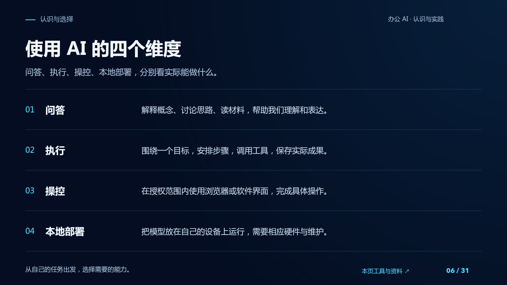
讲话稿
我把使用AI的方式分成四个维度来讲。第一个是问答。我们问一个问题，让它解释一个概念、讨论一个想法，或者读完资料后给出回答。这是很多老师最熟悉的用法。
第二个是执行。我不只问这份PPT应该怎么做，而是把材料交给它，要求它整理、制作、保存文件，再根据我的反馈修改。智能体，也就是Agent，会围绕目标安排步骤、调用工具、检查结果。例如Codex这类工具就可以参与实际工作。能做哪些事，还取决于它接到了哪些工具和文件。
第三个是操控。AI在具备相应能力和授权时，可以读网页或软件界面，点击、输入、切换页面，替我们完成一段操作。执行任务不一定必须模拟鼠标点击，有时直接处理文件或调用接口更合适。操控说的是其中一种具体做事方式。
第四个是本地部署。这里指把模型放到自己的设备上运行。它和在电脑上安装一个聊天客户端不同：客户端仍可能调用云端模型，本地部署则要承担模型运行需要的算力、内存和维护。普通办公入门不要求大家先做这一步，有明确的离线、资料管理或技术需求时再考虑。
这四个维度也不是四个必须依次升级的等级。本地或云端说的是在哪里运行，问答、执行和操控说的是怎样做事，实际产品可以组合使用。还有一个经常见到的词叫Skill，可以理解成把一类任务已经验证过的流程、参考和检查要求整理成说明包，给智能体反复使用。
课件文字
使用 AI 的四个维度
问答、执行、操控、本地部署，分别看实际能做什么。
01
问答
解释概念、讨论思路、读材料，帮助我们理解和表达。
02
执行
围绕一个目标，安排步骤，调用工具，保存实际成果。
03
操控
在授权范围内使用浏览器或软件界面，完成具体操作。
04
本地部署
把模型放在自己的设备上运行，需要相应硬件与维护。
认识与选择
办公 AI · 认识与实践
从自己的任务出发，选择需要的能力。
本页工具与资料 ↗
06 / 31
工具与资料
- Anthropic：Agent与工作流的区别（2026-10-25核对）
- Agent Skills：组成和用途（2026-10-25核对）
- OpenAI官方：Codex CLI（核对：2026-10-25）
- OpenAI官方：使用ChatGPT（核对：2026-10-25）
- Agent Skills标准概览（核对：2026-10-25）
完整备课资料
第 7 页 · 认识与选择
API 与 MCP，连接什么
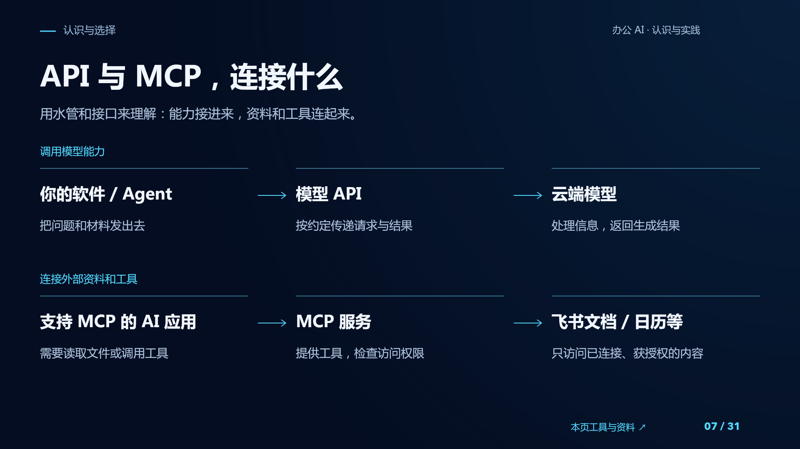
讲话稿
API 可以先想成一根按规格接好的水管。我们不一定非得打开模型厂商的聊天页面，也可以让自己的软件，通过模型 API 把请求送过去，再把结果接回来。模型通常还是在云端，接上接口不等于把模型搬进自己的电脑。
比如我在自己的工作软件里点“整理这份稿子”，软件通过 API 调用模型，把结果放回文档。这里 API 是接口，真正做事的是接口两边的软件和服务。聊天会员和 API 费用也可能分开算，不能以为买了一份会员，所有地方都自动通用。
MCP 可以理解为另一层的通用连接标准。假设一个支持 MCP 的 AI 应用想读飞书里的文档、查日历，需要有能连接这些功能的服务，也要取得相应权限。可以是平台提供的服务，也可以由开发者依据平台开放接口搭建。
这里把例子说准确：豆包工作本身提供的飞书文档和日历能力，可以走它已有的集成，不一定需要用户再建一个 MCP。对我们来说，先看现成工具有没有接好，能直接完成工作就先用起来。
课件文字
API 与 MCP，连接什么
用水管和接口来理解：能力接进来，资料和工具连起来。
调用模型能力
你的软件 / Agent
把问题和材料发出去
模型 API
按约定传递请求与结果
云端模型
处理信息，返回生成结果
连接外部资料和工具
支持 MCP 的 AI 应用
需要读取文件或调用工具
MCP 服务
提供工具，检查访问权限
飞书文档 / 日历等
只访问已连接、获授权的内容
认识与选择
办公 AI · 认识与实践
本页工具与资料 ↗
07 / 31
工具与资料
- OpenAI：聊天产品和API分别计费（2026-10-25核对）
- MCP官方：连接外部系统（2026-10-25核对）
- DeepSeek：首次调用API（核对：2026-10-25）
- Model Context Protocol官方介绍（核对：2026-10-25）
- 飞书官方OpenAPI MCP（核对：2026-10-25）
- 飞书：豆包工作全新发布（核对：2026-10-25）
完整备课资料
第 8 页 · 认识与选择
用云端 AI，不必先换电脑
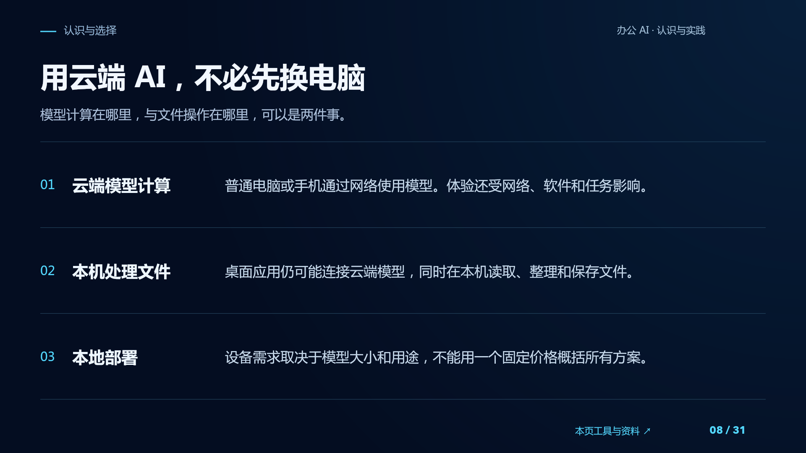
讲话稿
大家可能觉得，要用这么厉害的 AI，是不是先得买一台很贵的电脑？使用云端服务时，主要的模型计算是在服务商那里完成的。所以一些比较老的电脑，只要还能运行相应的软件、网络也正常，同样可以开始用。并不需要先买高端显卡。
但是也不能说老电脑一定一点都不卡。网页复杂、文件很大、网络慢，或者本机还要处理图片和视频，都会影响体验。安装了桌面版 AI，也不代表模型就在本地。它完全可能一边调用云端模型，一边处理我电脑里的文件。
把模型真正放到本地，是另外一种部署选择。硬件和维护成本会随模型大小、速度要求、同时使用的人数变化，小模型也可能在个人设备上运行。今天我们不展开设备采购，先把容易开始的云端工具用起来。
顺便认识一下 Token：它是模型处理信息时切分的小片段，不等于一个汉字，也不是算力。普通用户先关心长材料能否读完整、额度会不会打断工作，碰到限制再看具体说明就行。
课件文字
用云端 AI，不必先换电脑
模型计算在哪里，与文件操作在哪里，可以是两件事。
01
云端模型计算
普通电脑或手机通过网络使用模型。体验还受网络、软件和任务影响。
02
本机处理文件
桌面应用仍可能连接云端模型，同时在本机读取、整理和保存文件。
03
本地部署
设备需求取决于模型大小和用途，不能用一个固定价格概括所有方案。
认识与选择
办公 AI · 认识与实践
本页工具与资料 ↗
08 / 31
工具与资料
- OpenAI：理解与计算Token（2026-10-25核对）
- Ollama：本地运行与运行条件（2026-10-25核对）
- LM Studio系统要求（核对：2026-10-25）
- Ollama Qwen3模型库（核对：2026-10-25）
- 千问办公：快速开始（核对：2026-10-25）
完整备课资料
第 9 页 · 认识与选择
选工具，也要算返工时间
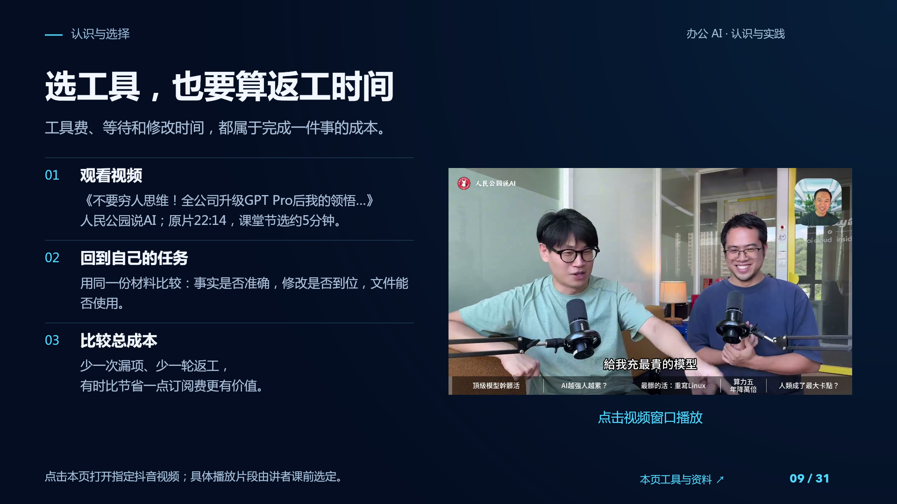
讲话稿
这一页我想请大家看一段视频。作者是“人民公园说AI”，标题是《不要穷人思维！全公司升级GPT Pro后我的领悟…》。原片有二十二分多钟，我们课堂里节选大约五分钟。大家带着自己的工作去看：我在意的，是工具费，还是把一件事做完所花的总时间？
看完以后，回到我们自己的任务。同一份会议材料，哪一个工具少漏信息、少改错事实，能不能按要求再改一轮，最后能不能交出一个真正能用的文件，这些都应该算进去。
最费力的结果，是看起来大部分都对，却夹着少量错误。因为我不知道错误在哪儿，还得逐项检查。所以我愿意为更可靠的能力、更顺畅的连续工作付费。当然，最后的事实和成果仍然由我来确认。
课件文字
选工具，也要算返工时间
工具费、等待和修改时间，都属于完成一件事的成本。
01
观看视频
《不要穷人思维！全公司升级GPT Pro后我的领悟…》 人民公园说AI；原片22:14，课堂节选约5分钟。
02
回到自己的任务
用同一份材料比较：事实是否准确，修改是否到位，文件能否使用。
03
比较总成本
少一次漏项、少一轮返工， 有时比节省一点订阅费更有价值。
点击视频窗口播放
认识与选择
办公 AI · 认识与实践
点击本页打开指定抖音视频；具体播放片段由讲者课前选定。
本页工具与资料 ↗
09 / 31
工具与资料
完整备课资料
第 10 页 · 认识与选择
选定一个主力，认真投入使用
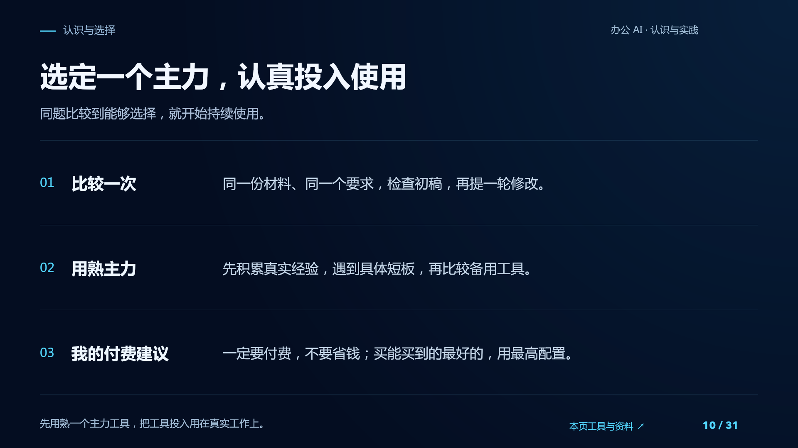
讲话稿
工具那么多，怎么选？我们可以做一次有限的同题比较。先了解几个相关产品，不必把市场上所有产品都用一遍。拿自己一段实际的工作想法，转成文字，用同一版材料和同一段要求去试。
比如我会说：请提炼我的核心想法，指出没有想清楚的地方，把我的意思和你的建议分开，不要添加原文没有的事实。这样一看，就知道哪个更理解我。
然后再改一轮。请它删掉套话、补出遗漏、保留已经确认的部分。初稿看起来整齐还不够，修改能不能改到点上，最后能不能交文件，才更接近真实工作。
看理解、可靠性、表达、修改和成本，比较到能够选择就停。先用熟一个主力，再留一个有明确用途的备用。以后遇到主力做不好的具体问题，再有针对性地比较。
付费这件事，我的建议很直接：一定要付费，不要省钱；买能买到的最好的，用最高配置。这是我作为一个认真把AI放进工作里的使用者，愿意分享给大家的选择。不要一直把精力花在领一点额度、换一个免费账号，再等一天上。
比如我要做二三十页课件，先读材料、理框架，再生成和修改。做到一半额度没了，就得等，思路也会被打断。我愿意为主力工具的更好能力、更多可用额度和连续工作的体验投入。这里说的配置主要是所选工具的模型、套餐与额度，不是让大家先去换一台高配电脑。
选定主力之后就持续用，把具体成果做出来。购买时仍要看清楚权益：聊天会员、API调用、配音、数字人视频可能分别收费。付费也不代表输出自动正确，该核对的内容还是要核对。
课件文字
选定一个主力，认真投入使用
同题比较到能够选择，就开始持续使用。
01
比较一次
同一份材料、同一个要求，检查初稿，再提一轮修改。
02
用熟主力
先积累真实经验，遇到具体短板，再比较备用工具。
03
我的付费建议
一定要付费，不要省钱；买能买到的最好的，用最高配置。
认识与选择
办公 AI · 认识与实践
先用熟一个主力工具，把工具投入用在真实工作上。
本页工具与资料 ↗
10 / 31
工具与资料
完整备课资料
第 11 页 · 认识与选择
好用的工具，先按工作找入口
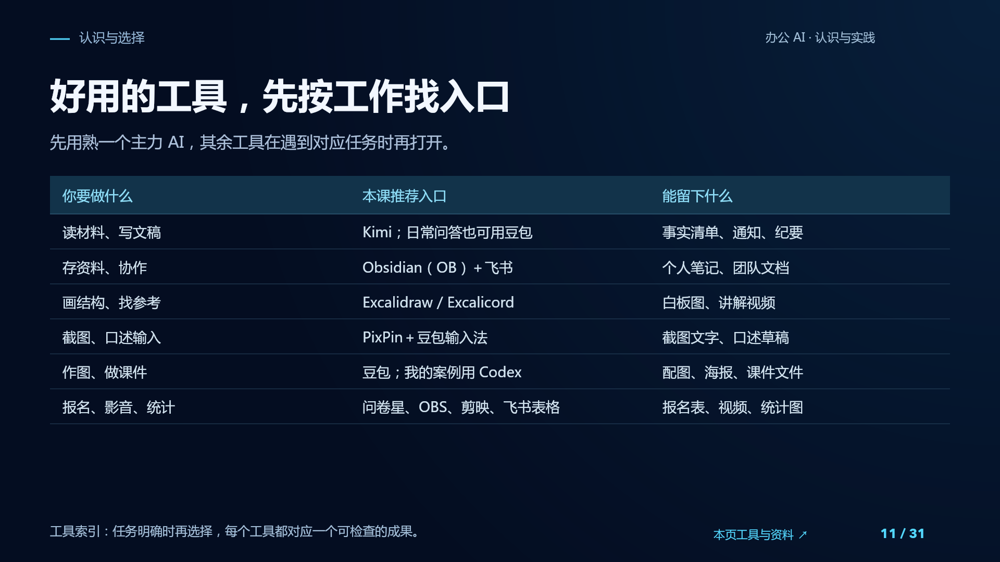
讲话稿
这页把名字放回工作里。读材料、写通知和纪要，我们用 Kimi；日常沟通和作图可以从豆包开始。先选一个主力，用熟之后再比较其他产品。
有些工具不负责生成，却能减少重复劳动。Obsidian，也就是我说的 OB，用来保存自己的笔记和来源。飞书适合共同修改文档、整理表格和会议资料。Excalidraw 用来把关系画清楚，Excalicord 可以把白板讲解录成视频，PixPin 用来截图、标注和识别文字。豆包输入法让我们在普通输入框里口述一段话。
做 PPT 时，包图网可以帮助寻找配色和布局参考，截图之后要说清楚喜欢什么。具体报名、录屏、视频和统计，后面各有一个实际任务。大家不用现在就把这一整张表都安装一遍，先记下自己当前需要的那一行。
课件文字
好用的工具，先按工作找入口
先用熟一个主力 AI，其余工具在遇到对应任务时再打开。
你要做什么
本课推荐入口
能留下什么
读材料、写文稿
Kimi；日常问答也可用豆包
事实清单、通知、纪要
存资料、协作
Obsidian（OB）＋飞书
个人笔记、团队文档
画结构、找参考
Excalidraw / Excalicord
白板图、讲解视频
截图、口述输入
PixPin＋豆包输入法
截图文字、口述草稿
作图、做课件
豆包；我的案例用 Codex
配图、海报、课件文件
报名、影音、统计
问卷星、OBS、剪映、飞书表格
报名表、视频、统计图
认识与选择
办公 AI · 认识与实践
工具索引：任务明确时再选择，每个工具都对应一个可检查的成果。
本页工具与资料 ↗
11 / 31
工具与资料
完整备课资料
第 12 页 · 亲身实践
我的第一个案例：用 AI 做 PPT
讲话稿
第一个案例是一份客户的演讲 PPT。客户给我的是完整讲话稿，但还没有拆成逐页内容，也没有确定哪些地方配图、哪些地方做关系图。我是在 Codex 里一步步推进的。
我先让它读稿，分析逻辑，再形成大纲。拿到大纲以后，我要判断这是不是客户真正想表达的意思，听众能不能顺着听下去。缺的数据就先不编，不能因为 AI 提出一个建议，就以为这个事实已经有了依据。
接下来，我切到公司的电脑，给大家看这个项目实际怎么做。大家重点看三个地方：最初怎样交材料和要求，第一版结构怎样确认，以及后来怎样指出具体修改。
回到这张课件，我们把顺序记下来：读懂原稿、确认大纲、写全逐页内容、确定风格、制作修改、核对交付。先把内容想清楚，后面的视觉修改会直接得多。
课件文字
我的第一个案例：用 AI 做 PPT
一份客户讲话稿，怎样变成可交付的课件。
实际项目素材：从客户讲话稿开始，逐步确认内容与视觉。
先理解讲话人的主线
把原稿理成大纲，确认要讲什么，再写逐页内容。
再进入制作与修改
确定参考风格，做样页，按具体反馈调整，最后打开文件检查。
亲身实践
办公 AI · 认识与实践
12 / 31
工具与资料
完整备课资料
第 13 页 · 亲身实践
做 PPT：参考图和修改意见怎样给
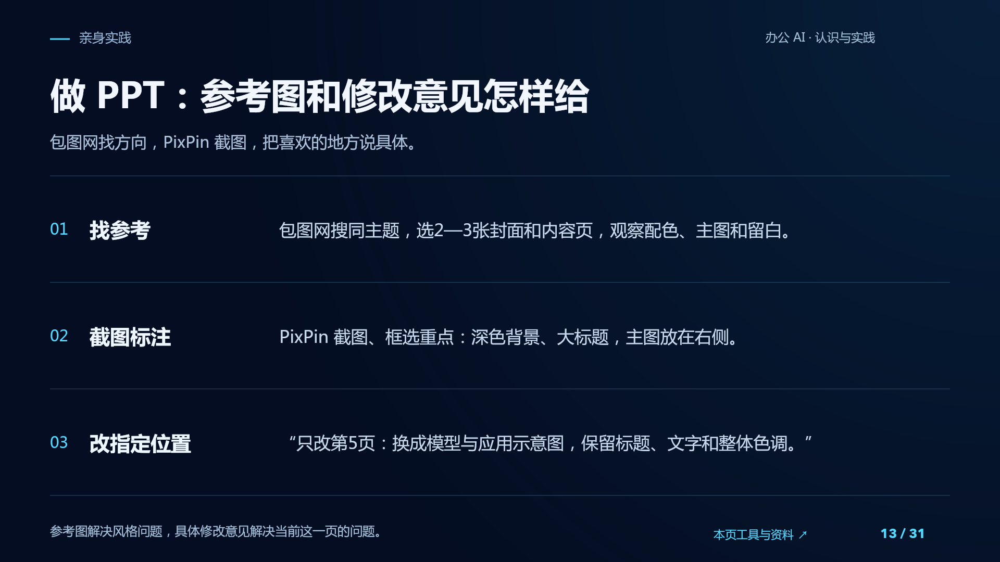
讲话稿
内容先确定，再找视觉参考。这里推荐包图网，搜同一主题，看封面和内容页，选两三张就够。我们主要看颜色、标题大小、主图位置和留白，不需要为了找参考先买一堆模板。
截图软件推荐 PixPin，Windows 和 Mac 都有。截取参考之后，可以用框线或标注指出喜欢哪里。比如我喜欢这张的深色背景，那张的大标题和主图留白，就把这些具体要求一起交给 AI。预览可以帮助讨论方向，实际使用模板或图片时仍按相应授权取得素材。
先做封面和一张内容页，方向确定之后再批量制作。修改也要说位置和保留项，比如这次第五页，我想让模型与应用的关系更直观，所以换一张说明关系的图，文字和色调保持原来的方向。
这样每一轮只解决一个明确问题。客户已经确认的文字不要随手重写，改完保存新版本，再打开实际文件看看图有没有裁错、文字有没有动到。
课件文字
做 PPT：参考图和修改意见怎样给
包图网找方向，PixPin 截图，把喜欢的地方说具体。
01
找参考
包图网搜同主题，选2—3张封面和内容页，观察配色、主图和留白。
02
截图标注
PixPin 截图、框选重点：深色背景、大标题，主图放在右侧。
03
改指定位置
“只改第5页：换成模型与应用示意图，保留标题、文字和整体色调。”
亲身实践
办公 AI · 认识与实践
参考图解决风格问题，具体修改意见解决当前这一页的问题。
本页工具与资料 ↗
13 / 31
工具与资料
完整备课资料
第 14 页 · 亲身实践
我的第二个案例：成组作图
讲话稿
第二个案例是我做的心理学短视频小样。我想把生活里常见的心理现象，用熟悉的场景讲出来。最开始在 ChatGPT 里讨论想法和脚本，逐渐形成十集内容的构想，再拆成分镜、做图片。它还是一个需要继续打磨的小样项目。
分镜不神秘，就是把要说的话和希望看见的画面放到一起。比如这一句解释一个概念，到底用人物反应、生活场景还是示意更清楚？先看这个关系，后面每张图就知道要完成什么任务。
风格上，我选了更温暖的方向，让画面的情绪能够接住心理学内容。如果不知道喜欢的图是什么风格，就把参考给 AI，让它描述颜色、光线和人物特点，再用同一段内容做少量样图比较。
方向定了再成组生成。修改时说清楚具体问题：人物转向哪里，背景哪里太复杂，字幕要留哪块空。满意的部分明确保留，最后按分镜顺序一起看。单张好看还不够，连起来要能讲清那段内容。
课件文字
我的第二个案例：成组作图
先确定讲什么，再确定每一段应该看见什么。
项目实际插图：同一风格下，画面分别服务不同段落。
脚本变成画面任务
把旁白和画面对应起来，再选择合适的风格。
样图确认后成组制作
人物、色调和光线保持连续。逐张改动作、构图和留白。
亲身实践
办公 AI · 认识与实践
14 / 31
工具与资料
完整备课资料
第 15 页 · 亲身实践
成本变了，沟通方式也变了
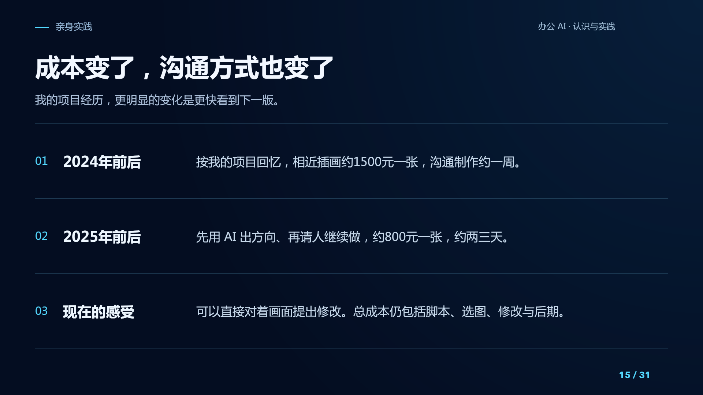
讲话稿
我为什么对这个变化感受很深？因为以前确实要为插画付费，也要投入很多沟通时间。按我自己的项目回忆，2024年前后，相近需求的一张插画大约1500元，沟通制作大约一周。
到了2025年前后，我可以先用 AI 出一些方向，交给插画师参考或者继续修改。按我的回忆，一张大约800元，沟通制作两三天。这是我的项目经历，不是整个行业的统一报价。
现在很多意见可以直接对着画面说，我更快看到下一版，比较哪里变好了、哪里还不对。省下来的不只是生成费用，还有来回解释风格和细节的时间。
但项目总成本不能只算工具费。脚本、审美判断、选图、修改和后期都在。大家可以拿自己的工作算一遍：到底少了哪些重复劳动，最后的东西能不能用。
课件文字
成本变了，沟通方式也变了
我的项目经历，更明显的变化是更快看到下一版。
01
2024年前后
按我的项目回忆，相近插画约1500元一张，沟通制作约一周。
02
2025年前后
先用 AI 出方向、再请人继续做，约800元一张，约两三天。
03
现在的感受
可以直接对着画面提出修改。总成本仍包括脚本、选图、修改与后期。
亲身实践
办公 AI · 认识与实践
15 / 31
工具与资料
完整备课资料
第 16 页 · 共通方法
说清需求：豆包输入法也能帮忙
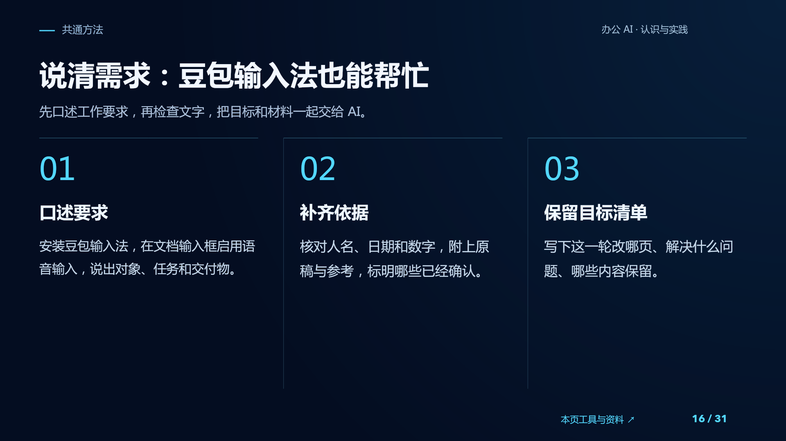
讲话稿
如果打字慢，先把话说出来。豆包输入法的作用，是在文档或输入框里把我们的口述变成文字。当前官网提供 Windows 和 Mac 下载，装好并启用之后，把光标放在输入位置，使用客户端里的语音入口就可以开始。手机也有相应入口。
比如我口述：给老师做一次九十分钟的 AI 办公分享，听众多数是初学者，要介绍工具和具体做法，最后交一份能修改讲话稿的课件。口述完还要检查日期、数字和人名，把没有说清的地方补上，再附上原稿。语音转文字不等于它已经理解了全部背景。
我还会在旁边放一张目标清单：我要什么、已经确认什么、这一轮改哪里。AI 做出一张漂亮图，很容易让人一直讨论细节。这张清单可以提醒我，当前的工作有没有往前走。下一页看看一段短片，再想想说出来的话和想要的结果有没有对齐。
课件文字
说清需求：豆包输入法也能帮忙
先口述工作要求，再检查文字，把目标和材料一起交给 AI。
01
口述要求
安装豆包输入法，在文档输入框启用语音输入，说出对象、任务和交付物。
02
补齐依据
核对人名、日期和数字，附上原稿与参考，标明哪些已经确认。
03
保留目标清单
写下这一轮改哪页、解决什么问题、哪些内容保留。
共通方法
办公 AI · 认识与实践
本页工具与资料 ↗
16 / 31
工具与资料
完整备课资料
第 17 页 · 共通方法
把意思说清楚，结果才接近预期
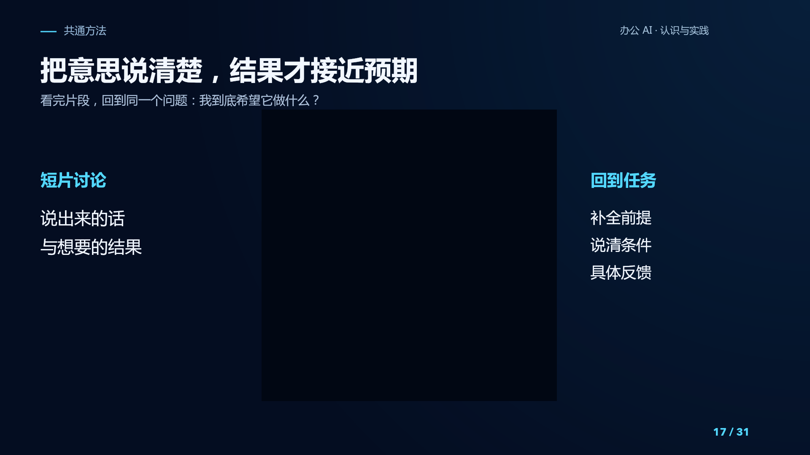
讲话稿
我们先看这段短片。看的时候可以留意，话说出口以后，结果和说话的人心里想要的，有没有出现偏差。
回到 AI 的使用上，我们当然不能把它当成影片里的情节。不过，这个提醒是相通的：我们自己省略的前提，工具未必知道。把对象、条件和希望得到的结果交代清楚，收到结果以后再具体指出偏差，沟通会更有效。
课件文字
把意思说清楚，结果才接近预期
看完片段，回到同一个问题：我到底希望它做什么？
短片讨论
说出来的话 与想要的结果
回到任务
补全前提 说清条件 具体反馈
共通方法
办公 AI · 认识与实践
17 / 31
工具与资料
完整备课资料
第 18 页 · 共通方法
AI Slop：生成很多，也可能没用
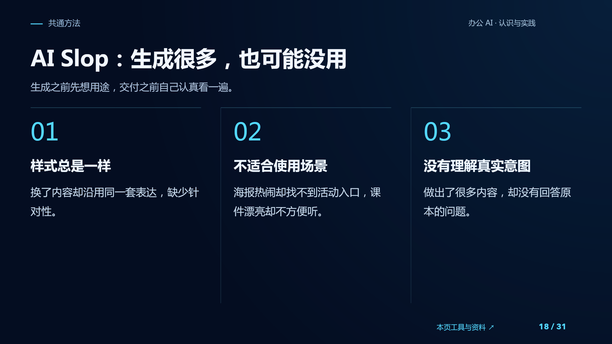
讲话稿
前面一直鼓励大家马上用起来，现在再说一个词，AI Slop，可以直白地叫“AI垃圾”。在这堂课里，我用它指那些缺少判断、低质量、没有实际价值的 AI 内容。
比如一份 PPT 有封面、有目录、有很多页，翻完却不知道说明了什么。或者海报很热闹，活动时间地点和参加方式却找不到。生成得再快，也没有完成任务。
《Training Taste》讲到的几个问题很有启发：反复套同一种样式，不符合具体场景，没有理解真实意图。宠物店和金融公司，不能只换文字就当成同一套设计。
这里不要求人人先成为设计师。至少先想清楚给谁用、解决什么事，再判断成品有没有做到。我们自己没有认真看过的东西，不要直接丢给别人，让别人替我们找有用信息。
课件文字
AI Slop：生成很多，也可能没用
生成之前先想用途，交付之前自己认真看一遍。
01
样式总是一样
换了内容却沿用同一套表达，缺少针对性。
02
不适合使用场景
海报热闹却找不到活动入口，课件漂亮却不方便听。
03
没有理解真实意图
做出了很多内容，却没有回答原本的问题。
共通方法
办公 AI · 认识与实践
本页工具与资料 ↗
18 / 31
工具与资料
完整备课资料
第 19 页 · 共通方法
交付前的三步检查
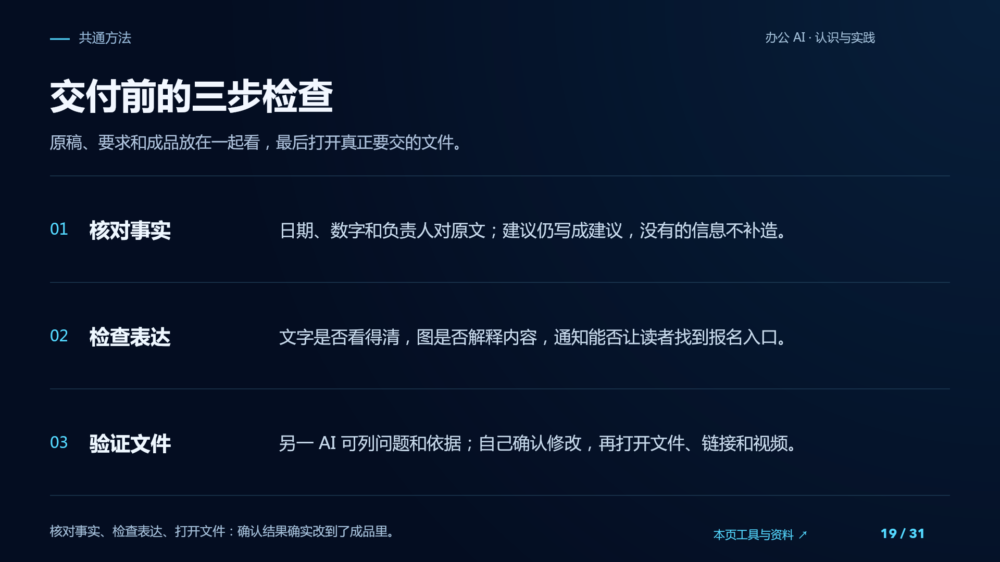
讲话稿
前面说到 AI Slop，真正有用的检查要落到具体位置。第一步核对事实。原稿说场地未定，成品就不能写成安排完毕；日期、人数和负责人，都要能回到原文。
第二步检查表达。通知能不能找到报名入口，课件字是否看得清，配图是否帮助说明这一页。与其让 AI 给整体打一个分，不如让它指出哪一行没有来源、哪个标签看不清、哪段和前面重复。Training Taste 给我的启发就在这里：把要求拆开，生成时和检查时用同一套标准。
备用 AI 可以帮忙列问题。把原稿、任务要求和成品一起给它，让它指出问题位置和理由，先别重写。我来决定哪些是错误、哪些只是表达偏好。两个 AI 意见相同，也不能替代原始依据。
第三步打开最终文件。以前的培训里，有报告被指出名称错误，口头说改了，文件里却没改到。知道问题和改好文件是两步。最后重点检查这一轮修改的页面，试开链接和视频，再保存确认稿、原始材料和下一步待办。接下来用这些方法完成老师们的具体工作。
课件文字
交付前的三步检查
原稿、要求和成品放在一起看，最后打开真正要交的文件。
01
核对事实
日期、数字和负责人对原文；建议仍写成建议，没有的信息不补造。
02
检查表达
文字是否看得清，图是否解释内容，通知能否让读者找到报名入口。
03
验证文件
另一 AI 可列问题和依据；自己确认修改，再打开文件、链接和视频。
共通方法
办公 AI · 认识与实践
核对事实、检查表达、打开文件：确认结果确实改到了成品里。
本页工具与资料 ↗
19 / 31
工具与资料
完整备课资料
第 20 页 · 老师们的办公需求
Obsidian：把资料变成自己的知识库
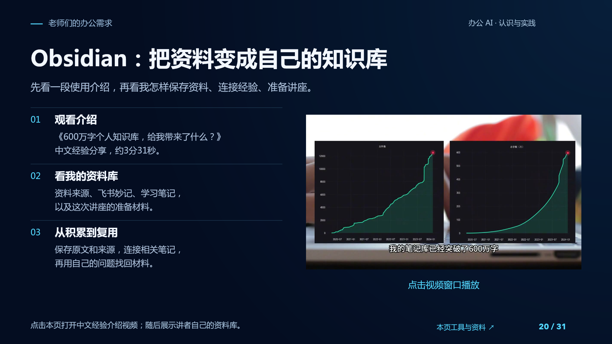
讲话稿
第二部分先讲我自己长期在用的Obsidian，也就是OB。先看这段三分多钟的中文使用分享，看看个人知识库实际能用来做什么。视频是其他使用者的经验介绍，里面的资料规模属于视频作者。
看完以后，我再打开自己的资料库。这里我会展示资料来源、飞书妙记、学习记录和这次讲座准备过程中留下的材料。我的重点是：原文能找到，自己的总结能找到，后来又做过哪些修改，也能沿着记录找回来。
比如准备讲座时，某个工具的介绍、以前看过的视频和自己实践后的感受，不需要重新到各个平台里找一遍。先在库里搜索，再沿着相关笔记找来源。用双中括号可以连接相关笔记，资料之间就不只是一层层文件夹的关系。
对刚开始用的老师，我建议先保存自己真正用到的材料。一条笔记写清来源、要点和自己的用法，原文件或原链接一起保留。先解决下次能找到、能接着用这个问题，积累才有意义。OB本身不会因为装好了就自动拥有这些内容。
课件文字
Obsidian：把资料变成自己的知识库
先看一段使用介绍，再看我怎样保存资料、连接经验、准备讲座。
01
观看介绍
《600万字个人知识库，给我带来了什么？》 中文经验分享，约3分31秒。
02
看我的资料库
资料来源、飞书妙记、学习笔记， 以及这次讲座的准备材料。
03
从积累到复用
保存原文和来源，连接相关笔记， 再用自己的问题找回材料。
点击视频窗口播放
老师们的办公需求
办公 AI · 认识与实践
点击本页打开中文经验介绍视频；随后展示讲者自己的资料库。
本页工具与资料 ↗
20 / 31
工具与资料
完整备课资料
第 21 页 · 老师们的办公需求
飞书妙记：从录音到可用文字
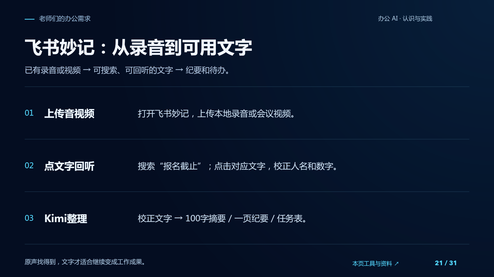
讲话稿
录音笔里或者手机里已经有一段会议录音，怎么继续用？打开飞书妙记，上传本地文件，它就可以把声音转成文字。视频也可以。我们不用一边听一边从头打字，而是先拿到一份可以搜索的记录，再把重要内容校正好。
这里最值得用的功能，是点文字回到原声。比如搜“报名截止”，找到那一句，直接听它前后说了什么。“建议十一月八日截止”和“确定十一月八日截止”只差几个字，意思就不同。人名、日期、数字和决定，我会优先看这些位置。
接下来，把校正过的文字交给Kimi，说明要什么成果。快速回顾就要摘要，分配工作就要纪要和任务表。我也可以先口述自己的想法，再转成文字，让它按背景、要做的事和希望的结果整理。下面用同一段短素材，看看上传、回听和整理怎样接在一起。
课件文字
飞书妙记：从录音到可用文字
已有录音或视频 → 可搜索、可回听的文字 → 纪要和待办。
01
上传音视频
打开飞书妙记，上传本地录音或会议视频。
02
点文字回听
搜索“报名截止”；点击对应文字，校正人名和数字。
03
Kimi整理
校正文字 → 100字摘要 / 一页纪要 / 任务表。
老师们的办公需求
办公 AI · 认识与实践
原声找得到，文字才适合继续变成工作成果。
本页工具与资料 ↗
21 / 31
工具与资料
完整备课资料
第 22 页 · 老师们的办公需求
Kimi读PDF：先做一张事实表
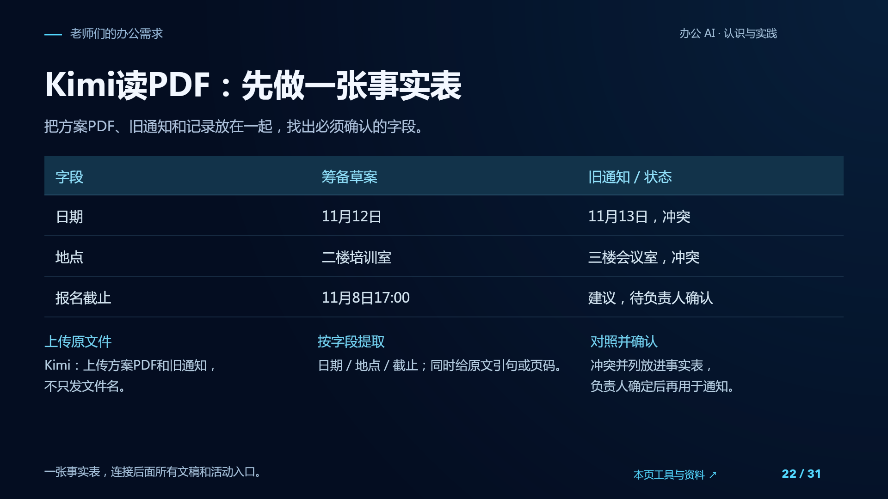
讲话稿
这里用一份虚构活动的方案PDF和旧通知举例。我把这两份材料一起传给Kimi，明确让它找活动日期、地点和报名截止，并给出原文依据。这样拿到的是一张可以继续用的事实表，不只是一段读完也不知道下一步做什么的概括。
请看这个例子：筹备草案是十一月十二日、二楼培训室；旧通知却是十一月十三日、三楼会议室。让Kimi把两个来源并列，我们一眼就知道要问负责人什么。十一月八日十七点截止目前只是建议，也放在表里保留这个状态。
核对时，可以按它给的原句回到PDF搜索；页码标不准，就要求给能搜索的原文，不让它凑一个页码。确认后的表存在飞书文档，以后制作通知、海报或报名页时，都可以取这里的信息，日期调整时也方便一起改。
课件文字
Kimi读PDF：先做一张事实表
把方案PDF、旧通知和记录放在一起，找出必须确认的字段。
字段
筹备草案
旧通知 / 状态
日期
11月12日
11月13日，冲突
地点
二楼培训室
三楼会议室，冲突
报名截止
11月8日17:00
建议，待负责人确认
上传原文件
Kimi：上传方案PDF和旧通知， 不只发文件名。
按字段提取
日期 / 地点 / 截止；同时给原文引句或页码。
对照并确认
冲突并列放进事实表， 负责人确定后再用于通知。
老师们的办公需求
办公 AI · 认识与实践
一张事实表，连接后面所有文稿和活动入口。
本页工具与资料 ↗
22 / 31
工具与资料
完整备课资料
第 23 页 · 老师们的办公需求
Excalidraw 与 Excalicord
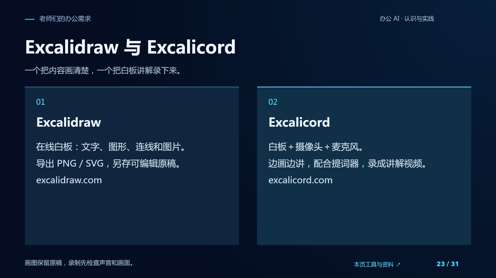
讲话稿
这里介绍两个工具，不再套一整套活动分工的例子，先把它们怎样使用讲清楚。第一个是Excalidraw，打开网页就能画白板。用文字写内容，用矩形或其他形状分组，用连线表达关系，也可以插入图片。先想清楚要说什么，再整理位置。
画完可以导出PNG或者SVG，放到PPT和文档里。如果以后还要修改，另外保存一份.excalidraw原文件，下一次直接打开继续改。图片适合交付，源文件适合继续工作，这两个用途要分开。
第二个是Excalicord。它把白板、摄像头和麦克风放在一起，可以边画边讲，录成一段讲解视频。它也有提词器，适合已经准备好讲稿，希望录一段课程说明或操作讲解的人。
在电脑浏览器里打开之后，先准备白板内容，选好摄像头、麦克风和画面比例，试录一小段。回放时检查字是否清楚，声音是否正常，人像会不会挡住白板。确认后再正式录。录完把文件保存到自己的课程目录，重新打开检查一次。
课件文字
Excalidraw 与 Excalicord
一个把内容画清楚，一个把白板讲解录下来。
01
Excalidraw
在线白板：文字、图形、连线和图片。 导出 PNG / SVG，另存可编辑原稿。 excalidraw.com
02
Excalicord
白板＋摄像头＋麦克风。 边画边讲，配合提词器，录成讲解视频。 excalicord.com
老师们的办公需求
办公 AI · 认识与实践
画图保留原稿，录制先检查声音和画面。
本页工具与资料 ↗
23 / 31
工具与资料
完整备课资料
第 24 页 · 老师们的办公需求
Kimi写纪要：把讨论变成任务表
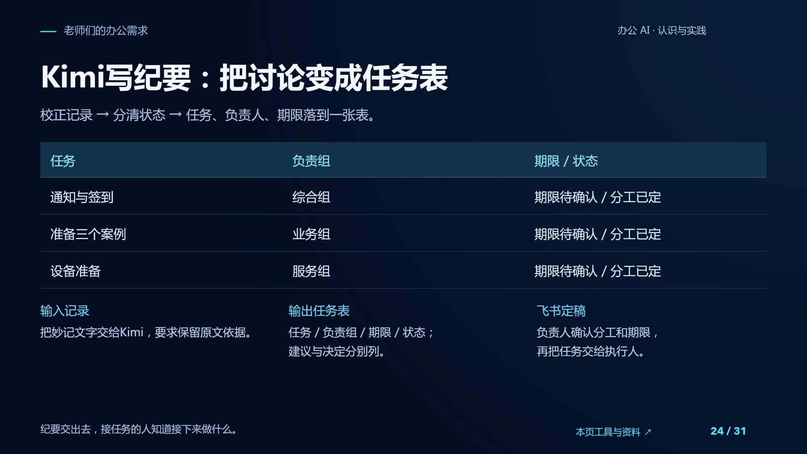
讲话稿
结构图适合看全局，真正安排工作还需要一张任务表。我们把刚才校正好的记录交给Kimi，让它按任务、负责组、期限和状态整理。综合组负责通知与签到，业务组准备三个案例，服务组准备设备，这些已经说清楚，可以直接进入表里。
记录里没有说期限，就保留待确认；主持人和预算也单独列出来。这样开完会，负责人看到的不是一大段“大家进行了充分讨论”，而是哪些事已经有人做，哪些缺口还要补。十一月八日十七点那个建议，也不会悄悄变成正式截止。
最后放到飞书文档，让对应老师看自己的任务。要审校已有纪要，也可以让Kimi先指出哪一句与原记录不一致，再定向修改。我们省掉的是整理和反复写表的时间，已经确认的分工就能清楚地交下去。
课件文字
Kimi写纪要：把讨论变成任务表
校正记录 → 分清状态 → 任务、负责人、期限落到一张表。
任务
负责组
期限 / 状态
通知与签到
综合组
期限待确认 / 分工已定
准备三个案例
业务组
期限待确认 / 分工已定
设备准备
服务组
期限待确认 / 分工已定
输入记录
把妙记文字交给Kimi，要求保留原文依据。
输出任务表
任务 / 负责组 / 期限 / 状态； 建议与决定分别列。
飞书定稿
负责人确认分工和期限， 再把任务交给执行人。
老师们的办公需求
办公 AI · 认识与实践
纪要交出去，接任务的人知道接下来做什么。
本页工具与资料 ↗
24 / 31
工具与资料
完整备课资料
第 25 页 · 老师们的办公需求
报名与问卷：问卷星、腾讯问卷
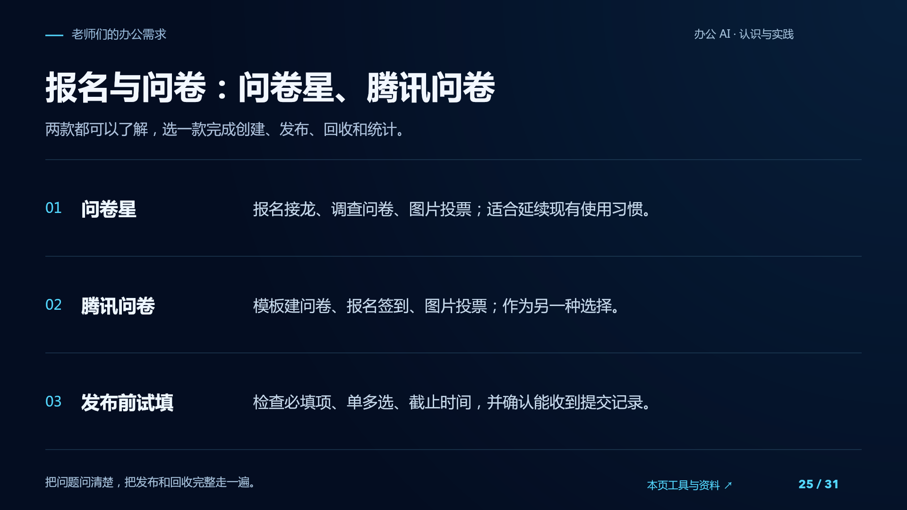
讲话稿
报名、调查和投票这类工作，我给大家两个入口：问卷星和腾讯问卷。已经用熟问卷星的老师可以继续用；如果想比较另外一种工具，可以看看腾讯问卷。两款都可以从模板开始，不必自己开发一个小程序。
报名表只收组织活动需要的信息，比如姓名、组别和参加项目。收反馈时，把问题拆清楚，例如内容是否有帮助、以后还想了解什么。不要把课程内容和会务安排揉成同一道满意度题，不然收上来的分数也不好解释。
作品投票可以使用图片选项，把几张候选海报放进去，问一个明确的问题，比如哪张最容易找到时间地点，再设单选或者多选和截止时间。两款平台都有相应的图片投票能力，具体题型和可用权益看自己的账号。
做完以后先拿手机试填一次，再回后台看记录是否收到了。链接能打开、表单能提交、结果能统计，才算走通。选一款适合自己的用熟即可，工具名单不需要越列越长。
课件文字
报名与问卷：问卷星、腾讯问卷
两款都可以了解，选一款完成创建、发布、回收和统计。
01
问卷星
报名接龙、调查问卷、图片投票；适合延续现有使用习惯。
02
腾讯问卷
模板建问卷、报名签到、图片投票；作为另一种选择。
03
发布前试填
检查必填项、单多选、截止时间，并确认能收到提交记录。
老师们的办公需求
办公 AI · 认识与实践
把问题问清楚，把发布和回收完整走一遍。
本页工具与资料 ↗
25 / 31
工具与资料
完整备课资料
第 26 页 · 老师们的办公需求
会议、PC 录屏与照片处理
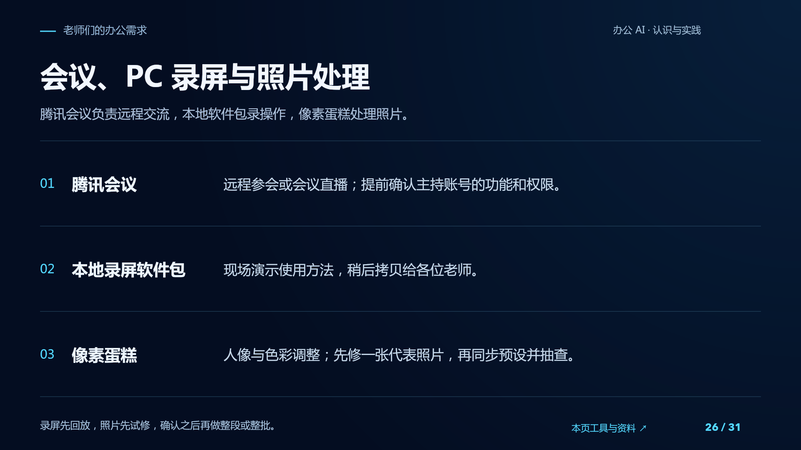
讲话稿
活动现场有三类常见需要。大家远程参加，可以继续用腾讯会议；如果要给更多观众看会议直播，则由主持人开直播、分享官方观看地址。这里要分清参会和直播，账号有没有直播权限要提前看，不能以为发一个普通会议号就具备所有直播能力。
PC端录屏，我会准备本地录屏软件包。现场给各位老师演示使用方法，稍后再拷贝给大家。这里先把录制流程讲清楚：选择要录的屏幕或窗口，确认画面范围，再检查麦克风是否有声音。
正式录制前，先试录三十秒，说几句话，回放检查画面与声音。确认没有问题，再录完整的操作过程。录好以后，可以根据需要在剪映里删掉等待和重复的部分。具体操作以现场提供的软件为准。
照片处理这里改用像素蛋糕。它可以做人像精修、色彩等调整，也能把调整保存成预设，同步到一批照片。我建议先挑一张有代表性的照片，调整到自然、清楚，再应用到其他照片。不同光线和不同人物的效果可能不同，批量处理后还要逐张抽查。
课件文字
会议、PC 录屏与照片处理
腾讯会议负责远程交流，本地软件包录操作，像素蛋糕处理照片。
01
腾讯会议
远程参会或会议直播；提前确认主持账号的功能和权限。
02
本地录屏软件包
现场演示使用方法，稍后拷贝给各位老师。
03
像素蛋糕
人像与色彩调整；先修一张代表照片，再同步预设并抽查。
老师们的办公需求
办公 AI · 认识与实践
录屏先回放，照片先试修，确认之后再做整段或整批。
本页工具与资料 ↗
26 / 31
工具与资料
完整备课资料
第 27 页 · 老师们的办公需求
AI 视频：平台、制作与成本
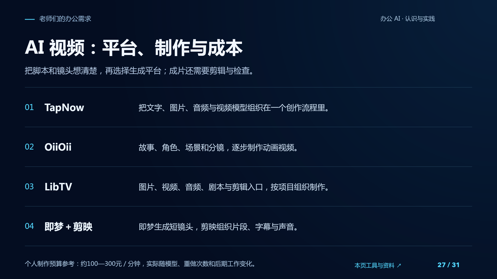
讲话稿
AI视频可以先了解这几个平台。TapNow可以把文字、图片、音频和视频模型组织到一个创作流程里。OiiOii比较适合围绕故事、角色和分镜制作动画。LibTV把图片、视频、音频、剧本和剪辑入口放在同一平台。大家熟悉的即梦也可以继续用，先生成需要的镜头，再进剪映完成剪辑。
视频的难点不只是生成一个好看的镜头。前后人物能不能对上，动作是否符合意思，几个镜头能不能连起来，声音、字幕和节奏是否合适，都需要继续调整。先把故事和镜头写清楚，再用一个短片段试方向，会比盲目生成一整条更容易修改。
我在这里给大家一个自己的制作预算概念：按我的经验，做一分钟AI视频，可以先按一百到三百元考虑。这是我分享的预算感受，不是哪一家平台统一的一分钟报价。用什么模型、生成多少次、废掉多少镜头，以及后面还要改多久，都会影响实际花费。
现在感兴趣，可以先用一个小片段试一试。先知道做成一段能用的东西需要哪些步骤，再决定投入多少。活动报道仍然应该保留真实现场素材，概念画面和真实记录的用途要分清楚。
课件文字
AI 视频：平台、制作与成本
把脚本和镜头想清楚，再选择生成平台；成片还需要剪辑与检查。
01
TapNow
把文字、图片、音频与视频模型组织在一个创作流程里。
02
OiiOii
故事、角色、场景和分镜，逐步制作动画视频。
03
LibTV
图片、视频、音频、剧本与剪辑入口，按项目组织制作。
04
即梦＋剪映
即梦生成短镜头，剪映组织片段、字幕与声音。
老师们的办公需求
办公 AI · 认识与实践
个人制作预算参考：约100—300元／分钟，实际随模型、重做次数和后期工作变化。
本页工具与资料 ↗
27 / 31
工具与资料
完整备课资料
第 28 页 · 老师们的办公需求
数字人的两个核心：形象与音频
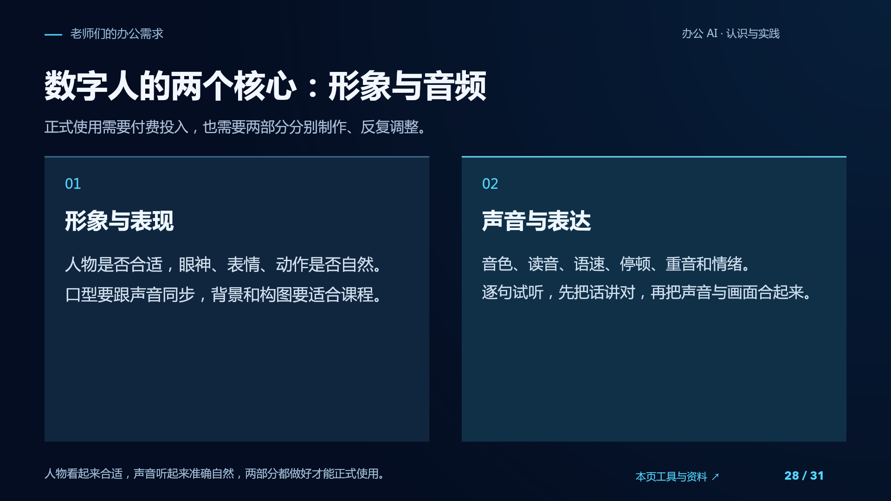
讲话稿
数字人这一部分，我想把话讲得更准确一些。它有两个核心：一是数字人本身的形象和表现，二是音频。两个部分都需要非常细致地调整。能生成一个人站在那里说话，和做出一段可以正式用于教学的内容，中间还有不少工作。
先看形象。人物的年龄、穿着和气质是否适合这个课程，眼神和表情是否自然，动作是不是一直重复，手和脸有没有不舒服的变化，都要看。再看画面：人物占多大，背景是什么，会不会挡住板书或字幕。这些不能只看一张静态预览就决定。
音频也不能简单理解成把文字读一遍。先把稿子改成适合说出来的话，再处理人名、专业词、多音字、数字和缩写的读法。语速太快，老师和学生听起来会累；没有停顿和重音，重点也出不来。要一段一段试听，调整音色、节奏和情绪。不是每个平台都提供同样的控制，需要按实际功能选择。
声音满意以后，再和人物画面合起来检查。口型是否对得上，句子停下来时人物是否还在做奇怪的动作，字幕和声音是否一致，配乐有没有盖住人声，都需要回放。如果克隆自己或其他人的形象与声音，还要准备符合要求的素材，并取得相应授权。
工具入口可以保留：中文数字人和配音可以了解讯飞智作，百度曦灵也有形象、声音和视频编辑工作台；有多语言需求时可以了解HeyGen。它们提供制作能力，但具体效果仍要靠内容准备和调整。形象、声音定制、视频生成时长等也可能分别收费，购买前要看清权益。
所以我目前不建议把数字人讲成老师随手玩一下就能直接用于正式课堂的工具。对有明确、持续需求的课程，可以安排预算和制作时间，或者请有经验的人协助，把形象和音频都做好。今天先认识它的制作要求，知道以后遇到需求时应该检查什么。
课件文字
数字人的两个核心：形象与音频
正式使用需要付费投入，也需要两部分分别制作、反复调整。
01
形象与表现
人物是否合适，眼神、表情、动作是否自然。 口型要跟声音同步，背景和构图要适合课程。
02
声音与表达
音色、读音、语速、停顿、重音和情绪。 逐句试听，先把话讲对，再把声音与画面合起来。
老师们的办公需求
办公 AI · 认识与实践
人物看起来合适，声音听起来准确自然，两部分都做好才能正式使用。
本页工具与资料 ↗
28 / 31
工具与资料
完整备课资料
第 29 页 · 老师们的办公需求
飞书：共同改稿、整理会议和处理数据
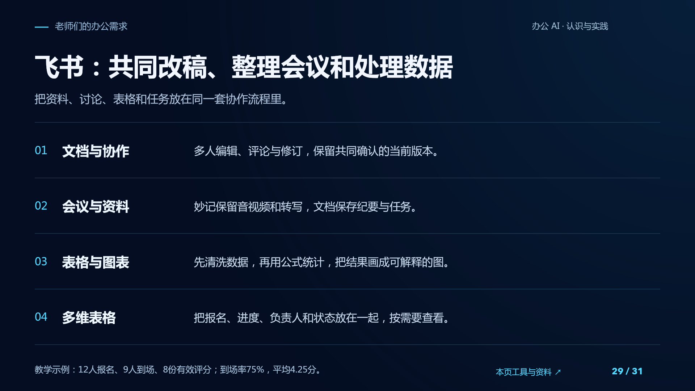
讲话稿
飞书能做的事情很多，不能只用两页公式把它讲完。它适合多人一起处理同一份材料。比如方案和讲稿放在文档里，大家在同一个链接里修改，用评论讨论，用修订确认文字，减少几个版本来回传。
会议结束后，妙记保存录音和转写，纪要放进文档，再把要做的事情整理成负责人、任务和时间。前面我们已经讲过妙记，这里把它和后续的协作连起来。
电子表格则适合处理报名和反馈数据。先检查重复、空白和格式，再算数。这里沿用一份虚构教学数据：十二人报名，九人到场，八份有效评分。空白评分表示没有填写，不能为了让表格整齐就填成零。
计算到场率时，用九除以十二，得到百分之七十五。评分总分三十四，除以八份有效评分，平均是四点二五分。讲这两个结果时，分母一定说清楚。飞书表格可以用公式计算，再把三个组的报名和到场人数做成并列柱状图，差别就比较直观。
还有多维表格，可以按一条一条记录来管理报名、任务、负责人和进度，再按需要筛选和查看。它更适合持续跟进同一批事情。老师们不用一上来就搭复杂系统，先把一份材料协作好、一张表统计清楚，再逐步增加功能。
课件文字
飞书：共同改稿、整理会议和处理数据
把资料、讨论、表格和任务放在同一套协作流程里。
01
文档与协作
多人编辑、评论与修订，保留共同确认的当前版本。
02
会议与资料
妙记保留音视频和转写，文档保存纪要与任务。
03
表格与图表
先清洗数据，再用公式统计，把结果画成可解释的图。
04
多维表格
把报名、进度、负责人和状态放在一起，按需要查看。
老师们的办公需求
办公 AI · 认识与实践
教学示例：12人报名、9人到场、8份有效评分；到场率75%，平均4.25分。
本页工具与资料 ↗
29 / 31
工具与资料
完整备课资料
第 30 页 · 结束与行动
今天，完整做成一件事
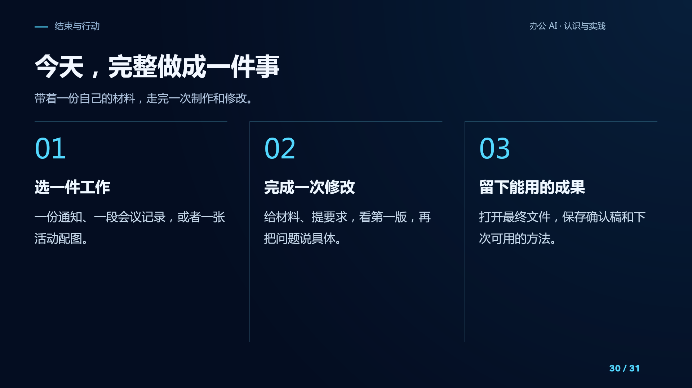
讲话稿
最后回到开头那句话：不管如何，马上把 AI 用起来。今天我们认识了一些名字，但我更希望大家带走一件具体的工作。
选一个工具，拿一份自己的材料，完整做一遍。第一版不满意，就说清楚哪里不满意，再改一次。把最后的文件打开，确认它真的能用，这才算一次完整的体验。
不用等把所有工具都研究明白。先用起来，经验会告诉我们下一步学什么。接下来，大家可以直接带着自己的任务来交流。
课件文字
今天，完整做成一件事
带着一份自己的材料，走完一次制作和修改。
01
选一件工作
一份通知、一段会议记录，或者一张活动配图。
02
完成一次修改
给材料、提要求，看第一版，再把问题说具体。
03
留下能用的成果
打开最终文件，保存确认稿和下次可用的方法。
结束与行动
办公 AI · 认识与实践
30 / 31
工具与资料
完整备课资料
第 31 页 · 交流
带着自己的任务来交流
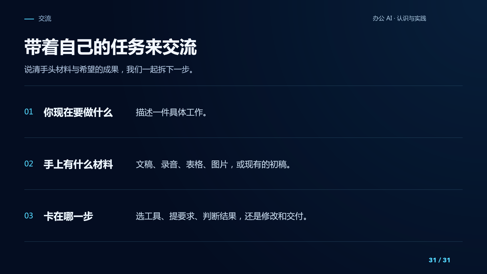
讲话稿
大家可以用很简单的方式说自己的问题：我现在要做什么，手上有什么材料，希望得到什么成果，目前卡在哪一步。我们就沿着今天这套方法，一起看看下一步怎样开始。
课件文字
带着自己的任务来交流
说清手头材料与希望的成果，我们一起拆下一步。
01
你现在要做什么
描述一件具体工作。
02
手上有什么材料
文稿、录音、表格、图片，或现有的初稿。
03
卡在哪一步
选工具、提要求、判断结果，还是修改和交付。
交流
办公 AI · 认识与实践
31 / 31